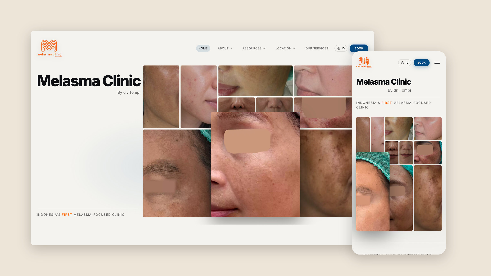
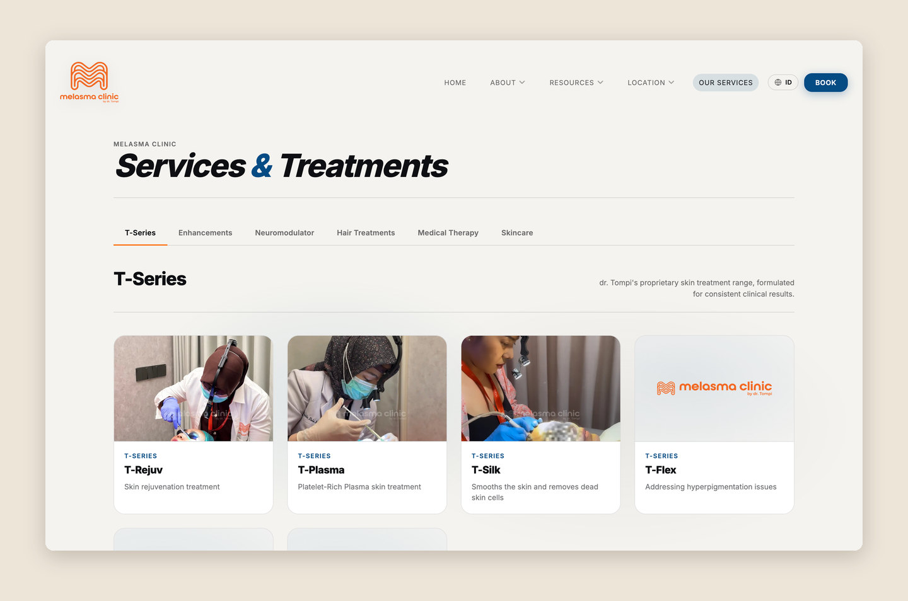
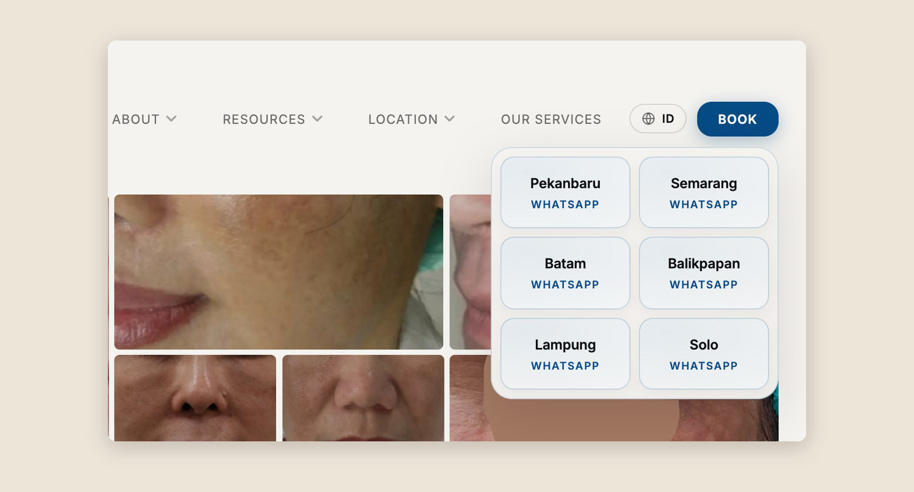

Melasma Clinic by Dr. Tompi
Designing and building the first website for Melasma Clinic, a new chain of dermatology clinics across Indonesia, from the clinic’s ideas to the live site.

The Problem
Dr. Tompi is a plastic surgeon based in Jakarta with clinics across Indonesia. His new chain, Melasma Clinic, didn’t have a website yet, and relied only on social media to advertise, with patients booking through WhatsApp.
Since the new clinics focus on dermatology rather than plastic surgery, Melasma Clinic needed its own website to show potential patients what services it offers and give them an easier way to book, while still leading them to WhatsApp at the end for final scheduling with the clinic’s admin.
Dr. Tompi also wanted to reach an international audience, as the new clinics are in cities easily accessible from Singapore and Malaysia. However, the content on Melasma Clinic’s Instagram and TikTok was mostly in Indonesian, so the website had to appeal to English speakers as well.
How might we show potential patients, both in Indonesia and abroad, what Melasma Clinic can do for them, and make booking as easy as possible?
Context & Constraints
Melasma Clinic by Dr. Tompi is a new chain of dermatology clinics in Indonesia. I took the clinic’s ideas for its website and turned them into full page designs, which I then implemented myself. The site needed to support patient bookings and present the clinic’s services.
- Most of the clinic’s patients are currently Indonesian, but the new locations are meant to appeal to the wider Southeast Asian market, so the site needed to work in both Indonesian and English.
- I had the summer of 2026 to finish the entire website, and I was responsible for everything except the content, which was provided by the clinic’s marketing team.
- Since the marketing team updates the site’s content themselves, I set up a content workflow with them so they could edit copy while keeping the design system consistent.
Process
Throughout the project, I followed the same loop: I used Claude Code to ideate and iterate on ideas, roughly created the chosen direction in Figma, got approval from either the marketing team or Dr. Tompi, and then built it in HTML and CSS.
1. Understanding what the clinic wanted
I met with Dr. Tompi and the marketing team to understand what they wanted from the website. After multiple meetings, I put together a moodboard and a list of inspirations to draw from. From those, we settled on blue and white as the main colors with orange accents, and a feel that was premium, refined, and clean, while still being modern and new.
2. Designing the website
With that direction in mind, I made the website’s design clean and minimal, using sans-serif fonts to add a modern touch to a design that might otherwise not feel new enough. Readability and simplicity were also important. I kept things from getting too fancy so that potential patients could get to what they want to know as fast as possible.
One unique request from Dr. Tompi was to not use a hero image of him on the home page. Many clinics, especially in Indonesia where private medical practices are very common, feature their main doctor as the face of the clinic, and Dr. Tompi is a particularly big name in Indonesian plastic surgery. However, he doesn’t practice at Melasma Clinic. He owns, manages, and visits it, so he didn’t want to use his likeness as the face of the website. He wanted the results to speak for themselves instead, which is where the home page’s before-and-after grid comes in, drawing patients straight to what the clinic can do for them. On top of that, Dr. Tompi isn’t nearly as well known in the wider Southeast Asian market, so results would matter more than his name when appealing to Singaporean and Malaysian patients.

3. Building the site and booking flow
Once each design was approved, I built it in HTML and CSS, with both Indonesian and English versions of the site. For booking, the Book button opens a list of the clinic’s locations, and each one leads straight to that clinic’s WhatsApp, so patients can find their nearest clinic and finish scheduling with the admin the same way they already did.

Outcome
The website is now live at melasmaclinicbydrtompi.com, and Dr. Tompi is happy with it overall. The handoff is complete, and the marketing team can now manage the website on their own.
Melasma Clinic went from relying only on social media to having its own bilingual website, with a booking flow that still ends in WhatsApp.
This project showed me a big hole in my design process, which was its organization. There were many times when I felt lost about what to do next, which the NUS UI/UX workshop I took later that summer helped with, as it taught me the proper UI/UX design process.
It was also my first time working with a client completely on my own, with no one else on the project. I had to translate Dr. Tompi’s and the marketing team’s ideas into actual designs, balance feedback from both of them, and get approval before building anything, since I was responsible for both the design and the code. It taught me how to communicate with a client and keep them involved, so that the final website matched what they had in mind.